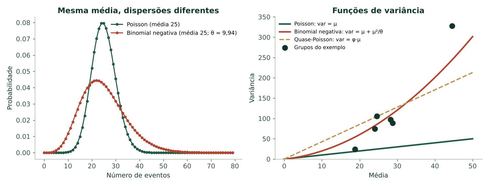
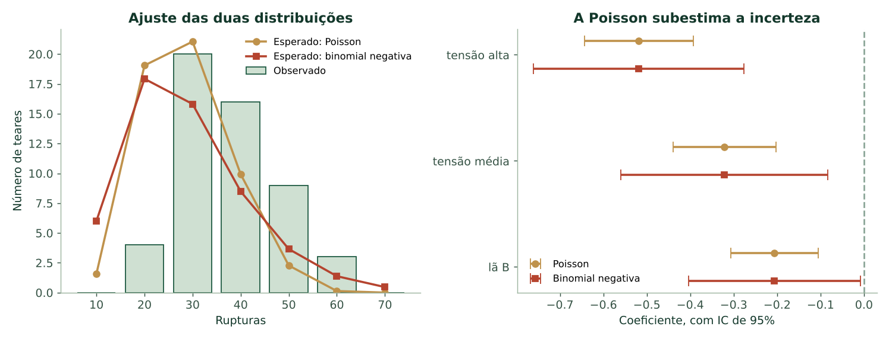

Regressão binomial negativa
Modela contagens cuja variabilidade excede a prevista pelo modelo de Poisson, acrescentando um parâmetro de dispersão.
Comece por aqui
Na regressão de Poisson, a variância é obrigatoriamente igual à média. Na prática, contagens quase sempre variam mais do que isso: há teares melhores e piores, trechos de estrada mais e menos perigosos, pessoas mais e menos propensas. Esse excesso de variabilidade chama-se superdispersão, e a regressão binomial negativa é a resposta usual para ele.
Imagine que cada unidade tem sua própria taxa média, e que essas taxas variam entre as unidades segundo uma distribuição gama. A contagem resultante segue uma binomial negativa. Por isso o modelo é descrito como uma mistura Poisson–gama: ele acomoda a heterogeneidade que não foi capturada pelos preditores.
O que é o modelo
A parte sistemática é idêntica à da Poisson: mesma ligação logarítmica, mesma leitura multiplicativa dos coeficientes. O que muda é a função de variância, que ganha um termo quadrático. O parâmetro \(\theta\) controla o tamanho desse acréscimo: quanto maior \(\theta\), menor a dispersão extra, e no limite \(\theta\to\infty\) o modelo volta a ser a Poisson.

As duas corrigem a superdispersão, mas de formas diferentes. A quase-Poisson supõe variância \(\phi\mu\) (proporcional à média) e não é um modelo de verossimilhança completo: não tem AIC. A binomial negativa supõe \(\mu+\mu^2/\theta\) (crescimento quadrático), é um modelo completo e permite comparação por AIC. Quando a dispersão cresce mais depressa que a média, a binomial negativa costuma descrever melhor.
Pressupostos e como verificá-los
| Pressuposto | Por que importa | Como verificar |
|---|---|---|
| Resposta é contagem | Definição do modelo. | Natureza da variável. |
| Observações independentes | Condição dos erros-padrão. | Delineamento; para agrupamentos, modelos mistos. |
| Função de variância μ + μ²/θ | Define os erros-padrão. | Resíduos de Pearson contra a média prevista; comparar variâncias observadas e previstas por grupo. |
| Linearidade no log | Mesma exigência da Poisson. | Resíduos contra os preditores. |
| Superdispersão de fato presente | Sem ela, a Poisson é mais eficiente. | φ da Poisson e teste de razão de verossimilhanças contra a binomial negativa. |
| Zeros compatíveis com o modelo | Excesso de zeros pede outro modelo. | Comparar zeros observados e previstos. |
Hipóteses e estatística de teste
Há ainda uma segunda pergunta, sobre o próprio uso do modelo:
Em que:
- \(\mu\)
- contagem média esperada
- \(\theta\)
- parâmetro de dispersão (também escrito \(k\) ou \(1/\alpha\)); valores grandes indicam pouca dispersão extra
- \(\Gamma(\cdot)\)
- função gama, que generaliza o fatorial
- \(\ell\)
- log-verossimilhança de cada modelo
- \(G\)
- estatística da razão de verossimilhanças
- \(e^{b_j}\)
- razão de taxas, com a mesma leitura da Poisson
Sob \(H_0\), o parâmetro \(1/\theta\) fica na fronteira do espaço de valores possíveis (não pode ser negativo). Nesse caso, a distribuição da estatística não é a qui-quadrado usual, e sim uma mistura; na prática, divide-se o valor-p por dois.
Exemplo numérico, passo a passo
No exemplo desta ficha, \(\hat\theta=9{,}944\).
Poisson: \(\operatorname{Var}=\mu=25\) (desvio-padrão de 5).
Binomial negativa: \(\operatorname{Var}=25+\dfrac{25^2}{9{,}944}=25+62{,}85=87{,}85\) (desvio-padrão de 9,4).
Como o erro-padrão dos coeficientes cresce aproximadamente com a raiz da variância, é essa diferença que quase dobra os erros-padrão do modelo.
Propriedades
- A variância é sempre maior que a média, de modo que o modelo só acomoda superdispersão, nunca subdispersão.
- Quando \(\theta\to\infty\), a distribuição converge para a Poisson com a mesma média.
- As estimativas dos coeficientes mudam pouco em relação à Poisson; o que muda substancialmente são os erros-padrão.
- Por ser um modelo de verossimilhança completo, admite AIC, BIC e testes de razão de verossimilhanças.
- O parâmetro \(\theta\) é estimado dos dados, junto com os coeficientes, e tem seu próprio erro-padrão.
- Aceita offset da mesma forma que a Poisson, para modelar taxas por unidade de exposição.
Como interpretar os resultados
| Elemento | O que informa | Cuidado |
|---|---|---|
| exp(b) | Razão de taxas, como na Poisson. | Mesma interpretação multiplicativa. |
| θ estimado | Grau de dispersão extra. | θ pequeno indica muita heterogeneidade; θ grande aproxima a Poisson. |
| Erro-padrão de θ | Precisão da estimativa de dispersão. | Costuma ser impreciso em amostras pequenas. |
| AIC em relação à Poisson | Qual modelo descreve melhor os dados. | Queda grande indica superdispersão relevante. |
| Valores-p | Agora com a incerteza correta. | Efeitos que pareciam fortes na Poisson podem enfraquecer. |
Reporte θ com seu erro-padrão, as razões de taxas com intervalos de confiança e a comparação de AIC com o modelo de Poisson.
Como executar no R e em Python
Onde executar o código em Python
Não é preciso instalar nada: o Google Colab é um computador na nuvem, gratuito, que executa Python pelo navegador e já traz as bibliotecas usadas aqui (numpy, scipy e matplotlib).
glm.nb() pertence ao pacote MASS, que acompanha a instalação padrão do R: basta library(MASS). A sintaxe é a do glm(), sem o argumento family, porque a função já estima \(\theta\) junto com os coeficientes. Para um \(\theta\) fixado, use glm(..., family = negative.binomial(theta)).
library(MASS)
modelo <- glm.nb(breaks ~ wool + tension, data = warpbreaks)
summary(modelo)
exp(coef(modelo))
O código Python desta ficha faz as contas passo a passo com numpy e scipy, para que cada resultado possa ser acompanhado. No dia a dia, as bibliotecas statsmodels e lifelines, também disponíveis no Google Colab, oferecem esses modelos prontos.
Exemplo de aplicação
Contexto dos dados
Retomamos o conjunto warpbreaks, usado na ficha de regressão de Poisson, em que o modelo apresentou superdispersão forte (φ = 4,26). A pergunta agora é o que muda ao substituir a distribuição de Poisson pela binomial negativa.
Código em R
# Regressão binomial negativa: exemplo completo ----
# Pacote: MASS (acompanha a instalação padrão do R)
library(MASS)
# 1. Dados: warpbreaks (54 teares; rupturas do fio por tipo de lã e tensão)
c(media = mean(warpbreaks$breaks), variancia = var(warpbreaks$breaks),
razao = var(warpbreaks$breaks) / mean(warpbreaks$breaks))
# 2. Modelo de Poisson (referência) e diagnóstico de superdispersão
mp <- glm(breaks ~ wool + tension, data = warpbreaks, family = poisson)
phi <- sum(residuals(mp, type = "pearson")^2) / df.residual(mp)
c(phi = phi, AIC = AIC(mp))
# 3. Modelo binomial negativa
mn <- glm.nb(breaks ~ wool + tension, data = warpbreaks)
summary(mn)
c(theta = mn$theta, erro_padrao_theta = mn$SE.theta, AIC = AIC(mn))
# 4. Razões de taxas e intervalos de confiança de 95%
exp(cbind(razao_de_taxas = coef(mn), confint(mn)))
# 5. Comparação dos dois modelos
# theta = 0 está na fronteira do espaço de parâmetros: o valor-p é metade do usual
G <- 2 * (logLik(mn) - logLik(mp))
c(G = as.numeric(G), valor_p = 0.5 * pchisq(as.numeric(G), 1, lower.tail = FALSE))
# 6. Efeito sobre os erros-padrão
cbind(poisson = summary(mp)$coefficients[, 2],
binomial_negativa = summary(mn)$coefficients[, 2])
# 7. Variância implícita por cada modelo
mu <- c(15, 25, 35, 45)
cbind(mu, var_poisson = mu, var_bn = mu + mu^2 / mn$theta)
# 8. Gráficos
par(mfrow = c(1, 2))
hist(warpbreaks$breaks, breaks = 12, col = "gray85", main = "", xlab = "Rupturas")
curve(x, 5, 60, xlab = "Média prevista", ylab = "Variância", col = "darkgreen", lwd = 2)
curve(x + x^2 / mn$theta, add = TRUE, col = "red", lwd = 2)
legend("topleft", c("Poisson", "Binomial negativa"), col = c("darkgreen", "red"), lwd = 2, bty = "n")
par(mfrow = c(1, 1))
A mesma análise em Python, com os resultados
Cole o código em um notebook do Google Colab ↗ e execute com Shift+Enter. Os valores abaixo são a saída desse código.
# Bibliotecas: numpy, scipy e matplotlib (já instaladas no Google Colab)
import numpy as np
from scipy import stats, optimize
import matplotlib.pyplot as plt
from scipy.special import gammaln, digamma
def glm_poisson(X, y, nomes, theta=None):
"""GLM com ligação log por mínimos quadrados ponderados iterativos.
theta = None: família Poisson. theta numérico: binomial negativa com esse parâmetro."""
b = np.zeros(X.shape[1]); b[0] = np.log(y.mean())
for _ in range(100):
mu = np.exp(X @ b)
W = mu if theta is None else mu / (1 + mu / theta)
z = X @ b + (y - mu) / mu
b_novo = np.linalg.solve(X.T @ (X * W[:, None]), X.T @ (W * z))
if np.max(np.abs(b_novo - b)) < 1e-10: b = b_novo; break
b = b_novo
mu = np.exp(X @ b)
W = mu if theta is None else mu / (1 + mu / theta)
cov = np.linalg.inv(X.T @ (X * W[:, None])); ep = np.sqrt(np.diag(cov))
zv = b / ep; pv = 2 * stats.norm.sf(np.abs(zv)); zc = stats.norm.ppf(0.975)
print(f"{'Termo':<14}{'Estimativa':>11}{'Erro-padrão':>13}{'z':>8}{'p-valor':>11}{'exp(b)':>9}{'IC 95% de exp(b)':>24}")
for nm, bi, ei, zi, pi in zip(nomes, b, ep, zv, pv):
print(f"{nm:<14}{bi:>11.4f}{ei:>13.4f}{zi:>8.3f}{pi:>11.2e}{np.exp(bi):>9.3f} [{np.exp(bi-zc*ei):>7.3f}; {np.exp(bi+zc*ei):>7.3f}]")
if theta is None:
logv = np.sum(y * np.log(mu) - mu - gammaln(y + 1))
else:
logv = np.sum(gammaln(y + theta) - gammaln(theta) - gammaln(y + 1)
+ theta * np.log(theta / (theta + mu)) + y * np.log(mu / (theta + mu)))
return dict(b=b, ep=ep, mu=mu, cov=cov, logv=logv, p=X.shape[1])
def estima_theta(X, y, tol=1e-8):
"""Alterna entre estimar os coeficientes (dado theta) e theta (dados os coeficientes)."""
theta = 1.0
for _ in range(50):
b = np.zeros(X.shape[1]); b[0] = np.log(y.mean())
for _ in range(100):
mu = np.exp(X @ b); W = mu / (1 + mu / theta)
z = X @ b + (y - mu) / mu
b = np.linalg.solve(X.T @ (X * W[:, None]), X.T @ (W * z))
mu = np.exp(X @ b)
f = lambda th: -np.sum(gammaln(y + th) - gammaln(th) - gammaln(y + 1)
+ th * np.log(th / (th + mu)) + y * np.log(mu / (th + mu)))
novo = optimize.minimize_scalar(f, bounds=(0.05, 500), method="bounded",
options={"xatol": 1e-9}).x
if abs(novo - theta) < tol: theta = novo; break
theta = novo
# Erro-padrão de theta pela segunda derivada numérica da log-verossimilhança
h = 1e-4 * theta
d2 = (f(theta + h) - 2 * f(theta) + f(theta - h)) / h**2
return theta, 1 / np.sqrt(d2)
# Dados do conjunto warpbreaks: 54 teares; número de rupturas do fio
quebras = np.array([26, 30, 54, 25, 70, 52, 51, 26, 67, 18, 21, 29, 17, 12, 18, 35, 30, 36,
36, 21, 24, 18, 10, 43, 28, 15, 26, 27, 14, 29, 19, 29, 31, 41, 20, 44,
42, 26, 19, 16, 39, 28, 21, 39, 29, 20, 21, 24, 17, 13, 15, 15, 16, 28])
la = np.repeat([0, 1], 27) # tipo de lã: 0 = A, 1 = B
tensao = np.tile(np.repeat([0, 1, 2], 9), 2) # tensão: 0 = baixa (L), 1 = média (M), 2 = alta (H)
# Matriz do modelo: intercepto, lã B, tensão média, tensão alta (níveis de referência: lã A e tensão baixa)
X = np.column_stack([np.ones(54), la, (tensao == 1) * 1.0, (tensao == 2) * 1.0])
nomes = ["(Intercepto)", "la B", "tensao M", "tensao H"]
n = len(quebras)
# 1. Superdispersão: na Poisson, variância = média
print(f"Média = {quebras.mean():.3f} | variância = {quebras.var(ddof=1):.3f} | razão = {quebras.var(ddof=1)/quebras.mean():.3f}")
# 2. Modelo de Poisson (referência)
print("\nModelo de Poisson:")
mp = glm_poisson(X, quebras, nomes)
X2 = np.sum((quebras - mp["mu"])**2 / mp["mu"])
print(f"Qui-quadrado de Pearson / gl = {X2 / (n - 4):.3f} | AIC = {-2*mp['logv'] + 2*4:.2f}")
# 3. Modelo binomial negativa
theta, ep_theta = estima_theta(X, quebras)
print(f"\nModelo binomial negativa (theta estimado = {theta:.4f}, erro-padrão = {ep_theta:.4f}):")
mn = glm_poisson(X, quebras, nomes, theta=theta)
print(f"AIC = {-2*mn['logv'] + 2*5:.2f} (um parâmetro a mais: theta)")
# 4. Comparação dos dois modelos pela razão de verossimilhanças
G = 2 * (mn["logv"] - mp["logv"])
print(f"\nlog-verossimilhança: Poisson = {mp['logv']:.3f} | binomial negativa = {mn['logv']:.3f}")
print(f"G = {G:.3f}; como theta = 0 está na fronteira do espaço de parâmetros,")
print(f"o valor-p é metade do da qui-quadrado com 1 gl: p = {0.5 * stats.chi2.sf(G, 1):.3e}")
# 5. Variância implícita pelos dois modelos
print("\nPrevisto var (Poisson) var (binomial negativa)")
for mu0 in [15, 25, 35, 45]:
print(f"{mu0:>8} {mu0:>13} {mu0 + mu0**2 / theta:>22.1f}")
# 6. Efeito sobre os erros-padrão
print("\nTermo EP Poisson EP binomial negativa razão")
for nm, e1, e2 in zip(nomes, mp["ep"], mn["ep"]):
print(f"{nm:<14}{e1:>11.4f}{e2:>23.4f}{e2/e1:>8.2f}")
# 7. Exemplo numérico do texto: variância prevista para mu = 25
print(f"\nPara mu = 25: variância Poisson = 25 | binomial negativa = 25 + 25²/{theta:.3f} = {25 + 625/theta:.2f}")
# 8. Gráfico: contagens observadas e variância pelos dois modelos
mu_grid = np.linspace(5, 60, 100)
fig, ax = plt.subplots(1, 2, figsize=(10, 4))
ax[0].hist(quebras, bins=12, color="lightgray", edgecolor="white")
ax[0].set_xlabel("Rupturas"); ax[0].set_ylabel("Frequência")
ax[1].plot(mu_grid, mu_grid, label="Poisson")
ax[1].plot(mu_grid, mu_grid + mu_grid**2 / theta, label="Binomial negativa")
ax[1].set_xlabel("Média prevista"); ax[1].set_ylabel("Variância"); ax[1].legend()
plt.show()
Resultados da execução
Média = 28.148 | variância = 174.204 | razão = 6.189
Modelo de Poisson:
Termo Estimativa Erro-padrão z p-valor exp(b) IC 95% de exp(b)
(Intercepto) 3.6920 0.0454 81.301 0.00e+00 40.124 [ 36.707; 43.858]
la B -0.2060 0.0516 -3.994 6.49e-05 0.814 [ 0.736; 0.900]
tensao M -0.3213 0.0603 -5.332 9.73e-08 0.725 [ 0.644; 0.816]
tensao H -0.5185 0.0640 -8.107 5.21e-16 0.595 [ 0.525; 0.675]
Qui-quadrado de Pearson / gl = 4.262 | AIC = 493.06
Modelo binomial negativa (theta estimado = 9.9444, erro-padrão = 2.5613):
Termo Estimativa Erro-padrão z p-valor exp(b) IC 95% de exp(b)
(Intercepto) 3.6734 0.0979 37.520 4.29e-308 39.384 [ 32.507; 47.715]
la B -0.1862 0.1010 -1.844 6.51e-02 0.830 [ 0.681; 1.012]
tensao M -0.2992 0.1217 -2.458 1.40e-02 0.741 [ 0.584; 0.941]
tensao H -0.5114 0.1237 -4.133 3.58e-05 0.600 [ 0.471; 0.764]
AIC = 408.76 (um parâmetro a mais: theta)
log-verossimilhança: Poisson = -242.528 | binomial negativa = -199.382
G = 86.292; como theta = 0 está na fronteira do espaço de parâmetros,
o valor-p é metade do da qui-quadrado com 1 gl: p = 7.761e-21
Previsto var (Poisson) var (binomial negativa)
15 15 37.6
25 25 87.8
35 35 158.2
45 45 248.6
Termo EP Poisson EP binomial negativa razão
(Intercepto) 0.0454 0.0979 2.16
la B 0.0516 0.1010 1.96
tensao M 0.0603 0.1217 2.02
tensao H 0.0640 0.1237 1.93
Para mu = 25: variância Poisson = 25 | binomial negativa = 25 + 25²/9.944 = 87.85
| Termo | Poisson: estimativa (EP) | Binomial negativa: estimativa (EP) | Razão entre os EP |
|---|---|---|---|
| (Intercepto) | 3,6920 (0,0454) | 3,6734 (0,0979) | 2,16 |
| lã B | −0,2060 (0,0516) | −0,1862 (0,1010) | 1,96 |
| tensão média | −0,3213 (0,0603) | −0,2992 (0,1217) | 2,02 |
| tensão alta | −0,5185 (0,0640) | −0,5114 (0,1237) | 1,93 |
| Elemento | Poisson | Binomial negativa |
|---|---|---|
| Log-verossimilhança | −242,53 | −199,38 |
| AIC | 493,06 | 408,76 |
| Parâmetro de dispersão | φ = 4,26 | θ = 9,944 (EP 2,561) |
| Valor-p da lã B | 0,000065 | 0,0651 |
| Valor-p da tensão alta | 5,2 × 10⁻¹⁶ | 3,6 × 10⁻⁵ |
| Média prevista | Poisson | Binomial negativa |
|---|---|---|
| 15 | 15 | 37,6 |
| 25 | 25 | 87,8 |
| 35 | 35 | 158,2 |
| 45 | 45 | 248,6 |
Leitura: a comparação dos modelos é decisiva: G = 86,29, com valor-p da ordem de 10⁻²¹, e o AIC cai de 493 para 409. As razões de taxas praticamente não se alteram (a tensão alta continua reduzindo as rupturas em cerca de 40%), mas os erros-padrão quase dobram. A consequência prática aparece no tipo de lã: na Poisson, o efeito parecia fortemente significativo (p = 0,000065); na binomial negativa, fica no limite (p = 0,065). O modelo de Poisson não estava errado quanto ao sentido dos efeitos, mas exagerava a confiança neles.
Erros comuns
| Erro | Como evitar |
|---|---|
| Usar a binomial negativa sem verificar se há superdispersão | Sem ela, a Poisson é mais eficiente; compare por AIC. |
| Confundir θ com φ | θ é o parâmetro da distribuição; φ é o fator de escala da quase-Poisson. |
| Trocar a convenção de θ | Alguns programas usam α = 1/θ; confira a documentação. |
| Tratar superdispersão quando o problema é excesso de zeros | Compare zeros observados e previstos; considere modelos com inflação de zeros. |
| Usar a binomial negativa para subdispersão | A variância do modelo é sempre maior que a média; considere modelos Conway–Maxwell–Poisson. |
| Esquecer que a dependência entre observações também gera superdispersão aparente | Modelos mistos ou GEE tratam a estrutura, não só a variância. |
Alternativas e fluxo de trabalho
| Procedimento | Quando preferir |
|---|---|
| Poisson | Sem superdispersão. |
| Quase-Poisson | Superdispersão proporcional à média; não se deseja supor uma distribuição. |
| Modelos com inflação de zeros ou com barreira | Zeros em excesso. |
| Binomial negativa tipo 1 (variância φμ dentro da família) | A dispersão cresce linearmente com a média. |
| Modelos mistos de Poisson | A heterogeneidade vem de agrupamentos identificáveis. |
| Árvores e florestas | Foco em previsão, com relações complexas. |
- Ajuste primeiro a Poisson e calcule φ.
- Se φ for bem maior que 1, ajuste a binomial negativa.
- Compare por AIC e pela razão de verossimilhanças (com o valor-p pela metade).
- Verifique zeros e resíduos.
- Interprete por razões de taxas, agora com a incerteza correta.
Referências desta ficha
- HILBE, Joseph M. Negative binomial regression. 2. ed. Cambridge: Cambridge University Press, 2011.
- CAMERON, A. Colin; TRIVEDI, Pravin K. Regression analysis of count data. 2. ed. Cambridge: Cambridge University Press, 2013.
- VENABLES, William N.; RIPLEY, Brian D. Modern applied statistics with S. 4. ed. New York: Springer, 2002. (Pacote
MASS.) - LAWLESS, Jerald F. Negative binomial and mixed Poisson regression. The Canadian Journal of Statistics, v. 15, n. 3, p. 209-225, 1987.
- VER HOEF, Jay M.; BOVENG, Peter L. Quasi-Poisson vs. negative binomial regression: how should we model overdispersed count data? Ecology, v. 88, n. 11, p. 2766-2772, 2007.
- TIPPETT, Leonard H. C. The methods of statistics. 4. ed. London: Williams and Norgate, 1950. (Conjunto de dados
warpbreaks, pacotedatasetsdo R.) - R CORE TEAM. R: a language and environment for statistical computing. Vienna: R Foundation for Statistical Computing, 2026. Disponível em: https://www.r-project.org/.
- POSIT TEAM. RStudio: integrated development environment for R. Boston: Posit Software, PBC. Disponível em: https://posit.co/download/rstudio-desktop/.
- VIRTANEN, Pauli et al. SciPy 1.0: fundamental algorithms for scientific computing in Python. Nature Methods, v. 17, p. 261-272, 2020. DOI: 10.1038/s41592-019-0686-2. (Funções do módulo
scipy.stats.) - HARRIS, Charles R. et al. Array programming with NumPy. Nature, v. 585, p. 357-362, 2020. DOI: 10.1038/s41586-020-2649-2.
- HUNTER, John D. Matplotlib: a 2D graphics environment. Computing in Science & Engineering, v. 9, n. 3, p. 90-95, 2007.
- GOOGLE. Google Colaboratory. Disponível em: https://colab.research.google.com/.
- As figuras desta ficha foram elaboradas pelo autor.

Prof. Dr. Cássius Henrique Xavier Oliveira
Professor · ICTIN/UFLA · Estatística, Confiabilidade e Ciência de Dados.
Conheça minha trajetória e projetos →